¿QUÉ ES PYTHON?
Python es un lenguaje de programación utilizado para desarrollar
diferentes tipos de programas y aplicaciones. Se caracteriza por
tener una sintaxis sencilla y fácil de entender, por lo que es muy
utilizado tanto por personas que están comenzando a programar como
por programadores con experiencia.
Python permite crear programas, automatizar tareas, trabajar con
datos, desarrollar aplicaciones y controlar diferentes sistemas.
Además, cuenta con muchas herramientas y bibliotecas que permiten
ampliar sus posibilidades.
En nuestro proyecto, Python forma parte de las herramientas que
utilizamos para aplicar conocimientos de programación y
automatización, trabajando junto con Arduino para lograr el
funcionamiento del sistema.
PROYECTO DEL DISPENSER
(PARTE DE PYTHON)
Lo que se hizo fue una aplicación para el dispenser de Arduino.
Así se ve el programa final:
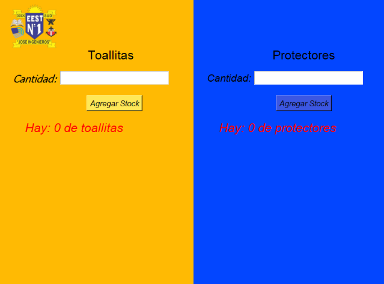
El código utilizado para crear este programa es el siguiente:
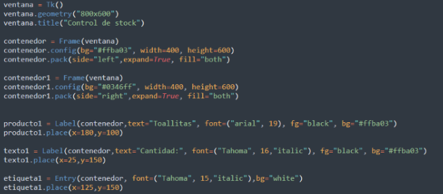
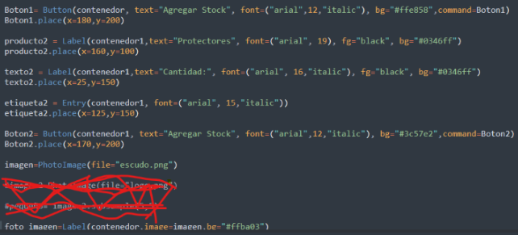
Todo el código que se muestra es parte de cómo está hecho el
programa final, excepto lo que está tachado en rojo.
Se utilizó una librería gráfica llamada Tkinter.
Este texto aparece a partir del siguiente código:
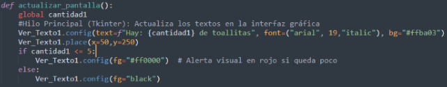
Lo que hace esta parte del código es cambiar el color del texto. Cuando hay menos de 5 unidades, el texto se muestra de color rojo. Si hay 5 unidades o más, el texto permanece de color negro.
Esta imagen aparece a partir del siguiente código:
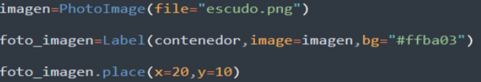
Este código se encarga de darle una posición a la imagen. También llama a la imagen y establece dónde debe aparecer y qué color de fondo debe tener.
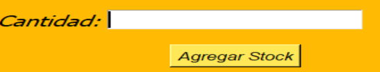
¿CÓMO FUNCIONA EL BOTÓN?
El botón realiza la siguiente función:
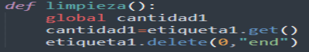
Esta función toma el contenido que se encuentra dentro del Entry y borra lo que se escribió en el campo gráfico.
COMUNICACIÓN CON ARDUINO
Ahora se realiza la comunicación entre Python y Arduino.
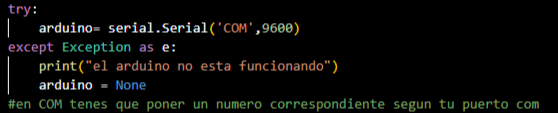
Lo que hace este código es conectar la variable Arduino con la
placa Arduino a través del puerto serial.
El puerto COM en realidad va acompañado de un número, por ejemplo
COM3. De esta manera, Python reconoce el puerto
utilizado y puede comunicarse con la placa Arduino.
Si Arduino no está conectado o no se encuentra disponible el
puerto indicado, aparecerá un mensaje en la terminal informando
que no está conectado.
¿CÓMO DESCUENTA EL PROGRAMA?
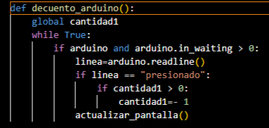
El programa lee la información que recibe desde Arduino.
Si la variable Arduino tiene información disponible y
arduino.in_waiting es mayor que 0, el programa
lee lo que fue enviado desde Arduino.
Si la línea recibida es igual a "presionado",
el programa descuenta una unidad del stock, siempre que la
cantidad sea mayor que 0.
VALIDACIÓN DE LOS DATOS
Volvemos a Python. Esta función se encarga de registrar la cantidad ingresada por el usuario.
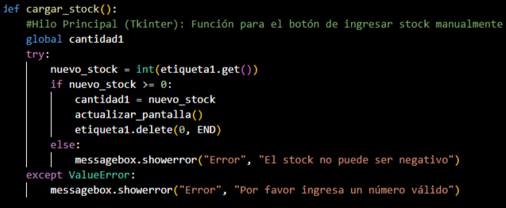
Esta función registra la cantidad ingresada y también muestra mensajes de error si se introducen letras o si se intenta ingresar un número negativo como stock.
TRABAJO EN HILOS
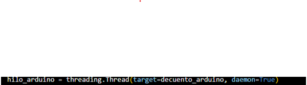
Esta parte del código hace que el programa trabaje utilizando
hilos (threads).
Un hilo permite que diferentes tareas del programa puedan
ejecutarse al mismo tiempo sin que una tarea bloquee
completamente a la otra.
En nuestro proyecto esto permite que la aplicación pueda
mantenerse funcionando mientras espera y recibe información
desde Arduino.